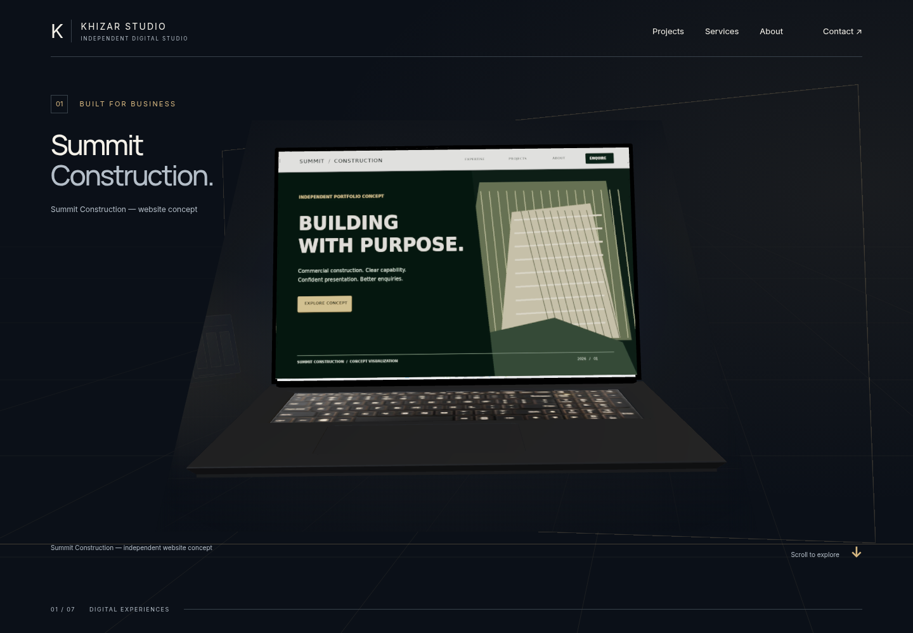
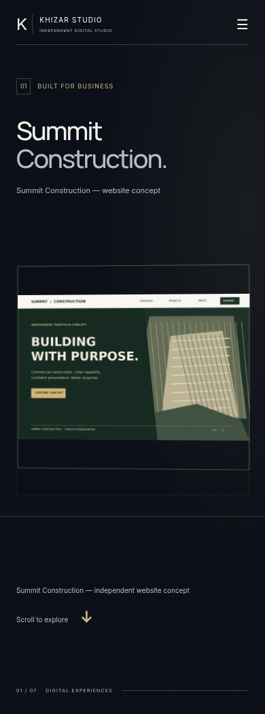
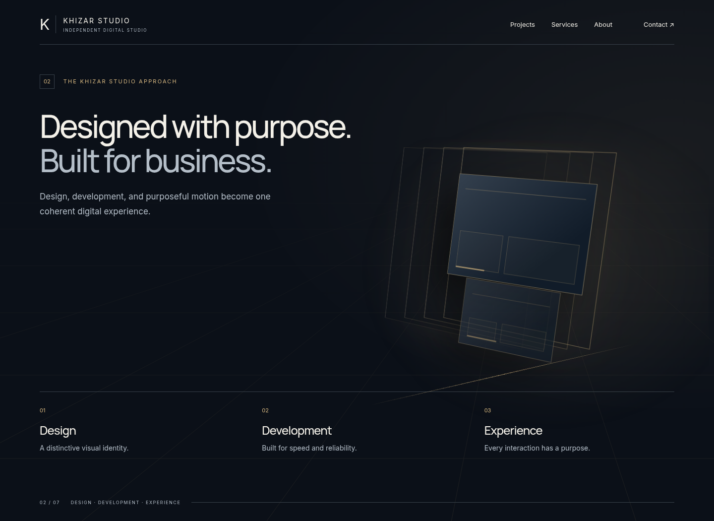
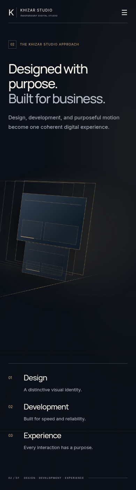
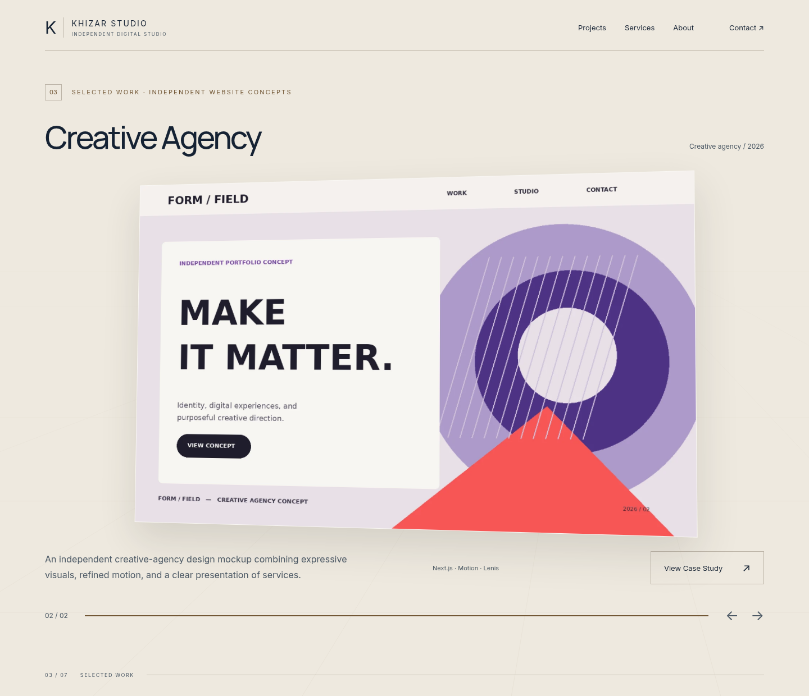
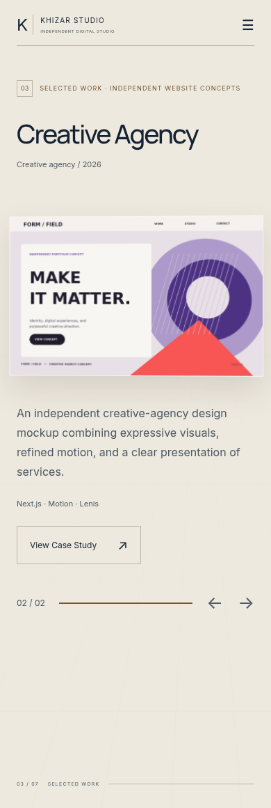
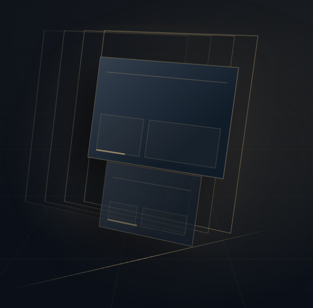
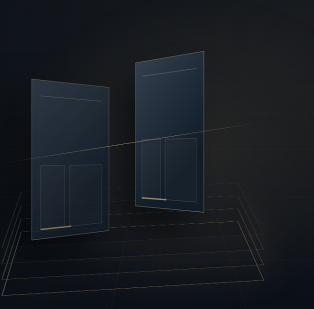
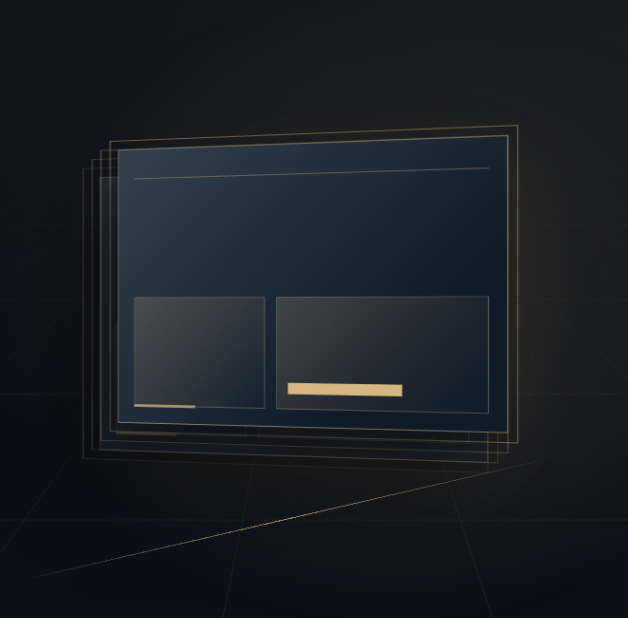

Seven connected visual experiences. Composition and motion designed together. Midnight navy. Warm ivory. Champagne light.
01Immersive Hero + existing laptop
02Capabilities → ivory Services
03Large project screens
04About + studio values
05Connected four-stage Process
06Working principles + FAQ
07Cinematic Contact + Footer
One visual language, different compositions
Art direction / system
Architecture provides continuity. Typography protects the reading space.
Midnight navy#0b1018
Warm ivory#eee9df
Champagne#d6b780
Ivory ink#152233
Secondary ink#4c5965
Bronze#725735
Warm white#f4f1e9
Retain the brand
Manrope display + Inter reading typography. Strong asymmetry, controlled measures and purposeful scale. Existing content, real concept projects and the working laptop remain.
Desktop: 80px outer rail at 1440px. Mobile: 24px rail at 390px. Fine rules replace repeated enclosing cards.
Redesign the compositions
One aperture becomes a stage, a structure, a rule, a ground plane and a path. Perspective belongs to artwork, not paragraphs. Calm sections are intentionally calm.
Champagne is lighting and emphasis. Use bronze for small text on ivory. Solid reading-color pairs exceed 4.5:1; full implementation still requires accessibility QA.
02 / DESIGN SYSTEM
01A · The architectural opening
Proposed static composition / 01 of 10
Desktop / 1440px widthMobile / 390px width
Arrival holds. The architecture changes depth around a fixed reading rail; the central aperture becomes the laptop stage. Mobile places one simplified aperture below the CTA. Full-size PNGs are included for closer reading; these are complete composition stills, not seven mandatory viewport-height panels.
03 / STORYBOARD
01B · A stage for the existing laptop
Proposed static composition / 02 of 10
Desktop / 1440px width

Mobile / 390px width

The protected laptop remains the focal object. Surrounding rails settle at its opening, zoom and inspection stages. The pictured laptop is an unaltered screenshot crop of the existing model, not a replacement asset. Mobile uses the existing browser fallback. Full-size PNGs are included for closer reading; these are complete composition stills, not seven mandatory viewport-height panels.
04 / STORYBOARD
02A · One object, three transformations
Proposed static composition / 03 of 10
Desktop / 1440px width

Mobile / 390px width

One set of interface planes aligns, connects into structural rails, then resolves into a completed interface. Labels and short descriptions stay settled; they are not attached to moving planes. The terminal rail becomes the service dividers. Full-size PNGs are included for closer reading; these are complete composition stills, not seven mandatory viewport-height panels.
05 / STORYBOARD
02B · Warm ivory, editorial services
Proposed static composition / 04 of 10
Desktop / 1440px widthMobile / 390px width
Navy passes through warm stone into ivory while the same guide line remains. Text appears only on the settled surface. Three service rows retain every description and feature; there is no flying-card carousel or extra pin. Full-size PNGs are included for closer reading; these are complete composition stills, not seven mandatory viewport-height panels.
06 / STORYBOARD
03A · The website becomes the object
Proposed static composition / 05 of 10
Desktop / 1440px widthMobile / 390px width
Actual existing project imagery, uncropped and undistorted. A shallow entry tilt settles near front-on for inspection. Copy, concept disclosure, progress, arrows and case-study links remain accessible. These are two states of one showcase, not two new sections. Full-size PNGs are included for closer reading; these are complete composition stills, not seven mandatory viewport-height panels.
07 / STORYBOARD
03B · The website becomes the object
Proposed static composition / 06 of 10
Desktop / 1440px width

Mobile / 390px width

Actual existing project imagery, uncropped and undistorted. A shallow entry tilt settles near front-on for inspection. Copy, concept disclosure, progress, arrows and case-study links remain accessible. These are two states of one showcase, not two new sections. Full-size PNGs are included for closer reading; these are complete composition stills, not seven mandatory viewport-height panels.
08 / STORYBOARD
04 · An editorial studio, not another card grid
Proposed static composition / 07 of 10
Desktop / 1440px widthMobile / 390px width
The project ground line carries into a navy reading environment. Copy stays in normal flow. A shared gold axis connects the three values; only its marker and ambient light respond to scroll. Full-size PNGs are included for closer reading; these are complete composition stills, not seven mandatory viewport-height panels.
09 / STORYBOARD
05 · A connected path with stable descriptions
Proposed static composition / 08 of 10
Desktop / 1440px widthMobile / 390px width
Four steps share one continuous route instead of four animated containers. A marker advances along it; every description is available without waiting for its turn. On mobile the same route becomes a vertical spine. No pin. Full-size PNGs are included for closer reading; these are complete composition stills, not seven mandatory viewport-height panels.
10 / STORYBOARD
06 · A deliberate pause for reading
Proposed static composition / 09 of 10
Desktop / 1440px widthMobile / 390px width
Warm ivory removes spectacle from decision-making content. Fine rules connect principles and FAQ; text remains still. The accordion keeps keyboard activation and expanded-state semantics. All answers remain in the source and accessible on expansion. Full-size PNGs are included for closer reading; these are complete composition stills, not seven mandatory viewport-height panels.
11 / STORYBOARD
07 · The aperture returns, the CTA stays ready
Proposed static composition / 10 of 10
Desktop / 1440px widthMobile / 390px width
The opening architecture resolves into one quiet frame behind a stable final invitation. Email and project CTA are usable immediately; convergence never gates contact. Footer belongs to the same composition rather than another isolated card. Full-size PNGs are included for closer reading; these are complete composition stills, not seven mandatory viewport-height panels.
12 / STORYBOARD
Capabilities: change the object’s organization
Three proposed transformation keyframes

01 / Design
Layered surfaces align into a visual hierarchy. The caption remains outside the moving object.

02 / Development
The same planes turn into structural elements and connected rails. This is a reorganization, not a new set of cards.

03 / Experience
The structure resolves into one complete interface. Its baseline continues into ivory service dividers.
Start near 20% transformation in / 60% readable hold / 20% handoff. These are design proportions, not a fixed autoplay duration. All stage descriptions remain semantic HTML. Reduced motion uses static stages.
13 / CAPABILITIES CHOREOGRAPHY
Seven experiences, a restrained scroll budget
Motion direction / reading contract
Experience
Choreography
Reading / access requirement
01 / Hero + laptop
20%60% HOLD20%
Initial hold → architectural passage → protected laptop stages
No new prelude pin. Never change the GLB, hinge, camera, screen fit or progress ref.
02 / Capabilities + Services
20%60% HOLD20%
Layer → connect → resolve → warm ivory
Reuse/reduce the existing story pin only if it improves reading. Services stays normal flow.
03 / Projects
20%60% HOLD20%
Tilt in → near-front inspection → recede
Keep arrows, focus navigation, progress, concept labels and case-study access. No timed exit.
04 / About
SEMANTIC CONTENT REMAINS STABLE
Shared line → value axis
Paragraphs and value descriptions stay still. Only the guide/marker moves.
05 / Process
SEMANTIC CONTENT REMAINS STABLE
Four nodes along one route
All four descriptions remain available. No hiding inactive steps and no pin.
06 / Principles + FAQ
SEMANTIC CONTENT REMAINS STABLE
Calm editorial reading
No cinematic reading gate. Preserve keyboard accordion and reduced-motion behavior.
07 / Contact + Footer
SEMANTIC CONTENT REMAINS STABLE
Aperture settles behind an immediate invitation
Email and CTA are ready on arrival. Decorative convergence does not delay contact.
Hold ratios apply to local cinematic moments, not entire page reading time. Keep the laptop’s existing sticky travel and Projects desktop behavior. Do not add seven pins. Pausing or reversing scroll must leave useful content.
14 / MOTION CONTRACT
Implementation follows approval, not the other way around
Preservation / next steps
1. Approve composition + reading behavior
Review the Hero’s reading/art split, frame language, ivory intervals, screen scale, mobile order and calm reading sections. The source is unchanged; this is not an implemented animation.
2. Establish semantic themes
Scoped text, surfaces, focus colors and navbar treatment. Shared geometry without a giant application-wide Canvas or transformed content ancestors.
3. Implement scene by scene
Hero/laptop, capabilities/Services, Projects, About/Process, then principles/FAQ/Contact. Reuse existing functional architecture and data. Preserve a checkpoint and review normal-speed captures after each batch.
Protected assets and behavior
Existing laptop files/controller. Two project concepts and case studies. All service features, About/Process copy, genuine working principles, FAQ answers, email, anchors and keyboard navigation.
Acceptance before continuing
Readable holds, reverse scroll, direct navigation, mobile and reduced motion, theme contrast, no stale controllers/pins, loading/restoration and measured device behavior.
Written companion
ART-DIRECTION.md includes the structural audit, content register, specific file map, risks, scroll budget, reference interpretation and approval decisions.
No new application code, Batch B, push or deployment in this design study. The next implementation stage needs explicit visual-direction approval. Existing font-download build limitations remain separate from this review.